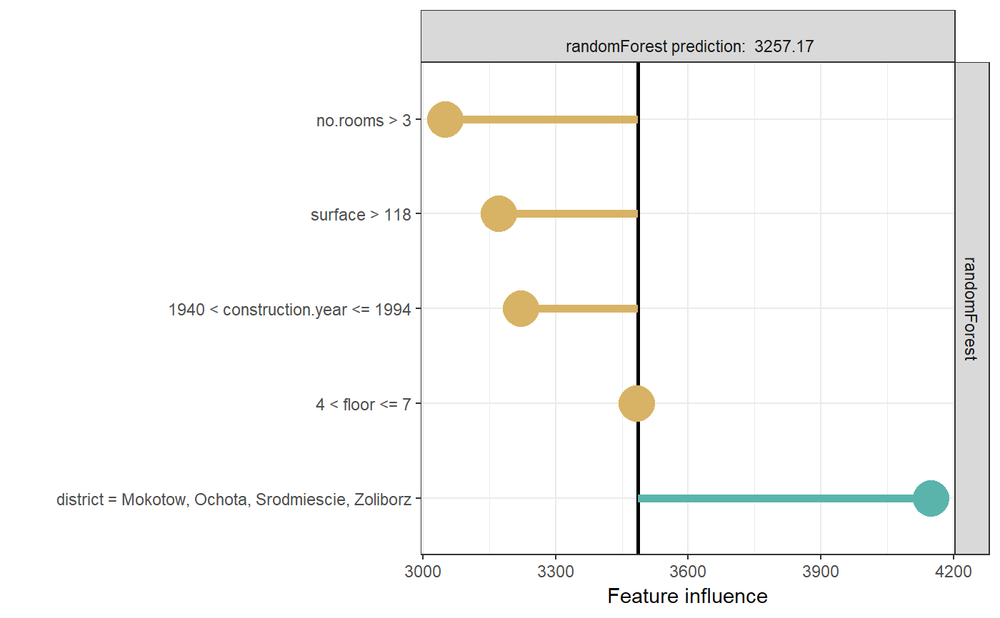

LIME kernel that treats all observations as equally similar to the observation of interest.
Kernels are meant to be used as an argument to individual_surrogate_model function. Other custom functions can be used. Such functions take two vectors and return a single number.
identity_kernel(explained_instance, simulated_instance)
Arguments
| explained_instance | explained instance |
|---|---|
| simulated_instance | new observation |
Value
numeric
Examples
library(DALEX2) library(randomForest) library(localModel) data('apartments') mrf <- randomForest(m2.price ~., data = apartments, ntree = 50) explainer <- explain(model = mrf, data = apartments[, -1]) model_lok <- individual_surrogate_model(explainer, apartments[5, -1], size = 500, seed = 17, kernel = identity_kernel) # In this case each simulated observation has equal weight # when explanation model (LASSO) is fitted. model_lok#> estimated variable original_variable dev_ratio #> 1 3485.861364 (Model mean) 0.797071 #> 2 3612.901944 (Intercept) 0.797071 #> 3 -263.884418 1940 < construction.year <= 1994 construction.year 0.797071 #> 4 -314.118284 surface > 118 surface 0.797071 #> 5 -2.968605 4 < floor <= 7 floor 0.797071 #> 6 -436.079972 no.rooms > 3 no.rooms 0.797071 #> response predicted_value model #> 1 3257.169 randomForest #> 2 3257.169 randomForest #> 3 3257.169 randomForest #> 4 3257.169 randomForest #> 5 3257.169 randomForest #> 6 3257.169 randomForestplot(model_lok)